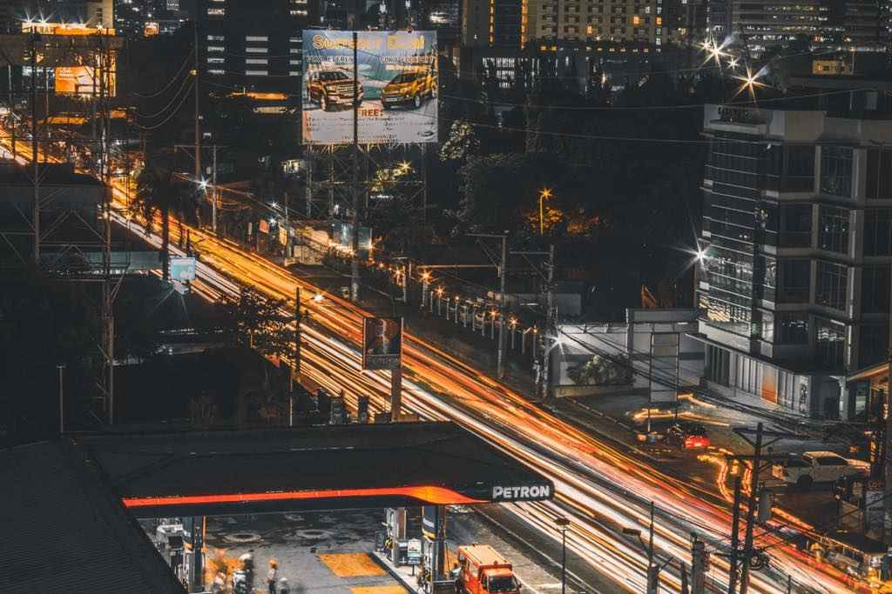
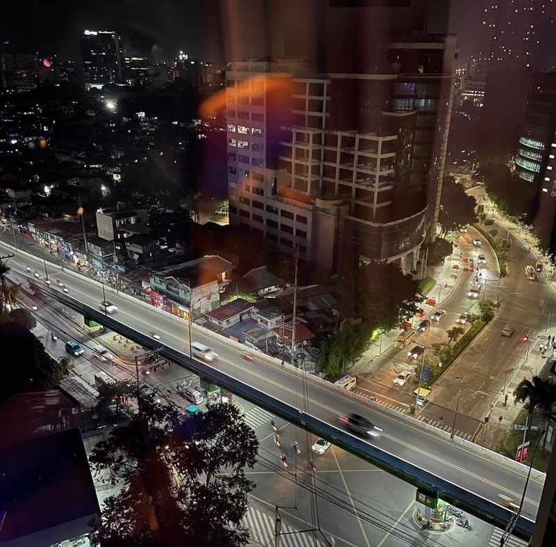

The best things to do in Cebu City at night depend on which part of the city you start in. Eat grilled seafood and barbecue at a food market, drink and catch live bands around IT Park, dance on Mango Avenue or in Mandaue, order cocktails with a view in Ayala and Nivel Hills, or skip alcohol altogether and watch the city lights from the Busay hills. Choose one of those and the rest of the night sorts itself out.
Cebu City has no single nightlife street. It has several clusters, spread across the city and across the channel on Mactan, and they feel like different towns. IT Park is tidy, well lit and easy to cover on foot. Mango Avenue is older, louder and cheaper. Mandaue holds the big clubs. Ayala and the hills above it handle rooftops and quieter drinks. Starting in the wrong one is how a calm dinner turns into a loud club, or the other way around.
This guide goes cluster by cluster, then covers night food, evenings without alcohol, what things cost, how to get home safely and four ready-made plans. Venues in Cebu rename, move and close quickly (the best-known night market is relocating this year), so treat the details below as a starting point and check a venue's Facebook page on the day you go.

Cebu City at Night at a Glance
Eat, watch the sunset, sit down
- Food markets and charcoal grills
- Sunset and city lights at Busay
- Rooftop drinks and early dinners
Music, dancing and late bites
- Live bands and bars in IT Park
- Clubs on Mango Avenue and in Mandaue
- 24-hour cafés and a ride home
Which Part of the City Fits Your Night?
Five areas cover almost everything. Most visitors only need two of them: one for dinner and one for the rest of the evening.
- IT Park, LahugThe easiest first night. A food market, bars, live music and 24-hour cafés within walking distance, in a district that stays lit and busy because call centres never close.
- Mango Avenue, near Fuente OsmeñaThe older party strip along General Maxilom Avenue. Cheaper drinks, louder music and a rougher edge than IT Park. Best for dancing, and best with a group.
- Ayala Center and Cebu Business ParkMall bars, hotel rooftops and speakeasy-style rooms. Pick it for a date, a catch-up or cocktails you can hear yourself order.
- Banilad and MandaueSuperclubs at City Time Square and Ouano Avenue, plus karaoke lounges around Banilad. This is where Cebuanos go for a full club night.
- MactanResort beach clubs across the channel in Lapu-Lapu City. An early-evening plan built around sunset, not a late one.
Bars and clubs run into the early morning, and the big clubs stay open until about 4 to 6 a.m. on their open nights. The dance floors still fill late, usually after midnight, so there is no rush to arrive early.
IT Park: The Easiest Night Out in Cebu
Cebu IT Park, in Barangay Apas, Lahug, is a business district packed with call centres, and that shapes its evenings. Staff finish shifts at every hour, so restaurants, cafés and bars keep working long after much of the city has gone quiet. The streets are well lit, security is visible, and you can cover the whole area on foot. That makes it the safest place to begin if you do not know the city yet.
Sugbo Mercado is the anchor, and the bars around it are within a few minutes' walk. Rooftop and sports bars include Straight Up at Seda Central Bloc. Expect beer at around ₱150 to ₱250 and cocktails from about ₱350.
A simple IT Park night is eat early, drink later and finish with coffee or a short walk. A Grab back to your hotel takes minutes, even late.
Check this before you go: Sugbo Mercado is moving. It is leaving its old lot in front of Avida Towers, beside the IT Park transport terminal, for the lot next to the JPMorgan Chase building off Inez Villa Street. Tents were up on the new lot in August 2026, but the market's own page still described the relocation as in progress. Ask a guard or your Grab driver where it is trading that week.
Sugbo Mercado
Cebu IT Park, LahugCebu's best-known open-air food market opened in IT Park in 2015 and still fills up for grilled seafood, barbecue, lechon, Korean and Japanese street food, halo-halo and fresh buko juice. Entry is free. Most stalls take cash only and a few accept GCash. Budget roughly ₱150 to ₱350 each for a plate and a drink, and closer to ₱700 if you order grilled meat and rounds of beer. The market's page lists daily hours of 4 PM to midnight, though one recent post said Tuesday to Sunday, so confirm before a Monday visit.
Order: walk a full loop before buying, start with grilled seafood and finish with halo-halo
Eat at Night: Grills, Street Food and Late Lechon
Cebu's best night food is cooked on charcoal in front of you, not served in a dining room. Three kinds of places cover the range, from a covered food park to a plastic stool beside a tub of fried viands.
Sugbo Sentro Fuente Osmeña (Larsian)
Beside Chong Hua Hospital, Fuente Osmeña CircleLarsian was the grill strip every Cebuano pointed visitors to. After it closed in 2020, the provincial government rebuilt it and reopened it in September 2023 as Sugbo Sentro, a covered food park of roughly 70 stalls, with its own restrooms (₱10 to use) and local bands on Thursday to Saturday nights when it reopened. It opens daily from 10 AM to midnight, so it suits dinner better than a 3 a.m. snack. Prices vary stall by stall and have drawn complaints, so ask the price per stick before the vendor grills it. The provincial Capitol has also been planning drainage, restroom and layout repairs, so conditions may differ from what you read here.
Order: pork barbecue, chorizo, grilled squid or fish, puso, a slice of lechon
Pungko-pungko around Carbon Market and Colon
Old downtown, around Colon StreetPungko-pungko is Cebu's low-stool street meal. You sit on a small bench, pick fried or grilled pieces from a tub and eat them with rice. It is the most local and usually the cheapest dinner in the city. Go in the early evening, bring a friend and leave before the streets empty out. Downtown is where petty theft concentrates after dark, so keep your bag in front of you.
Order: ask the price of each piece before you eat it, since the pieces add up quickly
Lechon, by the slice or the kilo
Citywide, including IT Park and N. Escario StreetCebu's roast pig is the dish people plan trips around. Rico's has branches at Ayala Malls Central Bloc in IT Park and along N. Escario Street, and Ayer's has outlets in IT Park and central Cebu, so a late plate is rarely far from your route. Opening hours differ by branch, so check the one you plan to use before you cross town.
Order: the spicy version if you want a change, with puso on the side
If hunger hits at 2 a.m., IT Park is your best bet. Its 24-hour cafés and restaurants exist because the call centres do not sleep. Away from IT Park, late-night options thin out quickly, and most grills and food parks close around midnight.
Mango Avenue: Older, Louder and Cheaper
Mango Avenue is the local name for General Maxilom Avenue, the stretch near Fuente Osmeña where Cebu's party scene lived long before IT Park existed. It is packed with bars, clubs and restaurants, and it suits a night with no itinerary: cheap beer, loud music and a friend group that is happy to wander.
Mango Square is the cluster to aim for. Club Hype is the long-running dance club, pitched at a young, mixed crowd with commercial dance music, and Marshall's Irish Pub is a reliable place to start with a beer. Social Park Avenue, which opened on the square in early 2025, is the biggest new venue, with room for about 1,000 people, a garden beer area, a main dining hall and an upper deck over the city. Names on this strip change often, so look at what is lit up and busy when you arrive.
It is also the area to be most careful in. Phone snatching is the street crime Cebu City police deal with most, and incidents involving foreigners have long clustered around nightclubs. Keep your phone in a front pocket or a zipped bag, stay on the main road instead of cutting through dim side streets, go with a group, and book your Grab from the curb outside the venue instead of walking around to find one. A bar that will not show you a priced menu is a bar to skip.
Ayala, Cebu Business Park and Nivel Hills: Rooftops and Quiet Drinks
If IT Park is for eating and Mango Avenue is for dancing, this side of the city is for sitting down with a drink you can taste and a conversation you can hear.
Inside Ayala Center Cebu, The Social works as a café by day and a bar at night, and The 93rd on the top floor is a sports bar. Up in Nivel Hills, Blu Bar & Grill at the Marco Polo Plaza is a hotel rooftop with a sweeping view over the city. For something more tucked away, The Lost Unicorn at One Montage is a Korean-inspired speakeasy that made Tatler's 2026 list of the 20 best bars in the Philippines, the only bar outside Metro Manila on it.

Dress smart casual, especially at hotel bars: closed shoes or neat sandals, no beachwear. Beer typically runs ₱150 to ₱250 and cocktails start around ₱350, with hotel bars higher. Weekends fill early, so message the venue's page to reserve a table, and expect a rooftop to close early if rain moves in.
Banilad and Mandaue: Superclubs and Karaoke
When Cebuanos want a proper superclub night, they head north to Mandaue. City Time Square, across from Parkmall, is the home of the club long known as Liv Super Club, which has also traded as Kazmik. The room holds roughly a thousand people and books resident and guest DJs. Oqtagon, on Ouano Avenue in the Meerea High Street area of Mandaue's North Reclamation Area, is the other big name. Confirm each club's current name, open nights and cover charge on its Facebook page. These venues rebrand often, and many open only Wednesday to Saturday.
Karaoke is how many Filipino groups spend a night, and Cebu has plenty of it. The chains include Red Box at The Terraces in Ayala Center Cebu, Song Hits! (branches on Juana Osmeña Street, in One Mango and at Banilad Town Centre) and K1 Family KTV at Intersections in Banilad. You rent a private room, sing, and order food and drinks to the room, so it works best with six to ten people. Ask for the room rate, the per-hour charge and any minimum order before you sit down, and find out how drinks are billed.
Bring a valid ID to every bar and club. Cebu City tightened its liquor ordinance in 2025 and now fines venues for each customer under 21 found drinking on the premises, so door staff ask.
Mactan: Beach Clubs at Sunset
Mactan Island is outside Cebu City proper, across the bridges in Lapu-Lapu City, but its resorts are where the beach clubs are. Allow anywhere from 30 minutes to over an hour depending on traffic, and treat Mactan as an early-evening plan rather than a late one.
Azure Beach Club at Crimson Resort and Spa in Maribago reopened in a refreshed, larger space, and non-guests can buy a day pass with a dining credit. Weekday day passes have run about ₱2,500, with ₱2,000 of it as dining credit, but rates change by day and season. Mövenpick's Ibiza Beach Club closed for reconstruction in 2025, so check whether it has reopened before you build a night around it. Our guide to Mactan resort day passes compares rates, inclusions and the best way to book.
Nights Without Drinking
A night out in Cebu City does not need alcohol. The best non-drinking plan is up in the hills, and the way up is easier than it used to be.
The easy way up
IT Park to Tops by shuttle
Fare₱200 round tripIncludesEntranceRuns7 AM to 3 AM
-
Step 1
Find the terminal
The shuttle leaves from the IT Park transport terminal on Geonzon Street, often Lane 11. If you are unsure, ask a guard or check the Tops page for the current boarding point.
-
Step 2
Ride up
The ₱200 fare covers the return trip and the ₱100 entrance, which also solves the problem of finding a ride back. Buses run about every 30 minutes, and the climb takes around 20 minutes.
-
Step 3
Stay for the lights
Tops sits about 610 metres above the city and is open 24 hours. Sunset is the crowded hour. Waiting until after dark gives you the full spread of lights, and a jacket helps because the air is cooler up here.
-
Step 4
Time your ride back
The last shuttle down leaves at about 3 AM. Do not cut it close, and take an earlier bus if the weather is turning.
Driving up? The entrance is ₱100 per person and parking costs extra. The road is steep and winding, so take it slowly after dark.
Temple of Leah, a Roman-style monument on the same hillside, is the natural second stop. Entrance has been ₱120 on weekdays and ₱150 on weekends, and the temple usually opens from 6 AM to 11 PM, but confirm both at the gate. Arrive near golden hour for the best light on the stairway and fountains. Our Busay hills half-day trip shows how to line up the temple, Sirao Garden and Tops in one run.
- Dinner at Top of CebuA restaurant on the Tops summit with a city view, open 11 AM to 11 PM. The Tops entrance fee applies, and whether diners are exempt is not published, so ask when you reserve.
- Basilica del Santo Niño and Magellan's CrossVisit before dark. The basilica is open from 6 AM to 7 PM, and the cross kiosk usually keeps 8 AM to 6 PM hours. Fridays and Sundays bring pilgrims and open-air Masses.
- Malls and cinemasAyala Center Cebu and SM City Cebu are air-conditioned, safe and good in the rain. Most close around 9 or 10 PM, so check closing times first.
- 24-hour cafés in IT ParkThe best late-night choice for coffee, dessert or a long conversation when the bars are too loud.
- Live musicFood parks such as Sugbo Sentro host local bands, with Thursday to Saturday the usual run. Check the venue's page for who is playing.
- A casino nightThe Waterfront Cebu City Hotel and Casino on Salinas Drive keeps its casino open round the clock. It is an option for a late, air-conditioned evening, not a highlight.
When to Go: Weeknights, Weekends and Festival Weeks
Sunday to Wednesday
Calm and easy
Rooftops and restaurants have free tables, Grab waits are short and the food markets are easier to walk. Many clubs open only Wednesday to Saturday, so a Monday is a night for food, not dancing.
Thursday to Saturday
Best energy, worst waits
Local bands play at the food parks, IT Park bars fill up and the clubs reach full volume after midnight. Book tables early and expect surge pricing on Grab around closing time.
Festival weeks
Rules change
During the January Sinulog, the city bans alcohol along the parade route during the day and restricts street parties, and hotels fill. Check the city's notices and book a room early.
Four Sample Nights in Cebu City
Use these as templates and swap in whatever is open that week. Every one ends with a Grab, not a long walk.
The first-timer · IT ParkMarket dinner and a rooftop
- 5:30 PMGrab to IT ParkCheck where Sugbo Mercado is trading before you arrive
- 6:00 PMSugbo MercadoWalk a full loop first, then grilled seafood and halo-halo
- 8:00 PMA rooftop bar near IT ParkOne round of drinks with a view
- 10:00 PMLive music or a 24-hour caféEverything is on foot
- 11:30 PMGrab to your hotelBook before the bars empty
The foodie · Downtown and FuenteStreet food and the grill
- 5:00 PMPungko-pungko near Carbon MarketGo while it is still light, and bring a friend
- 6:30 PMGrab to Fuente OsmeñaA short ride uptown
- 7:00 PMSugbo Sentro (Larsian)Barbecue, chorizo and puso, with a live band on the right night
- 9:00 PMDessert and coffee in IT ParkIts cafés stay open late
- 10:30 PMGrab homeNo need to stay out later
The party · Mango Avenue and MandaueDinner, dancing and a late club
- 8:30 PMDinner in Banilad or at the food parkEat properly before the drinking starts
- 10:00 PMMarshall's or a Mango Square barKeep your phone out of back pockets
- 11:30 PMClub Hype or Social Park AvenueThe dance floors fill after midnight
- 1:30 AMGrab to Mandaue if you still have energyConfirm the club is open that night
- 3:00 AMGrab to the hotelDo not drive
The quiet one · Busay hillsGolden hour, city lights and dinner
- 4:30 PMGrab to Temple of LeahAgree a return ride or plan to book one on site
- 5:00 PMTemple of Leah at golden hourConfirm the entrance fee at the gate
- 6:15 PMTops for sunset and the first lights₱100 entrance by your own ride
- 7:30 PMDinner at Top of CebuReserve ahead and ask about the gate fee
- 9:30 PMShuttle or Grab downThe shuttle runs until about 3 AM
What a Night Out Costs
Getting Home Safe: Rides, Rules and Habits
Use Grab for anything after dark instead of waving down a taxi on the street. The price appears before you get in, the trip is recorded in the app, and you can check the driver and plate against what is on your screen. Demand spikes between about midnight and 2 a.m., so expect surge pricing and waits near Mango Square and IT Park on Friday and Saturday. Book as soon as you decide to leave.
- GrabThe default after dark. Confirm the plate and driver before you get in, and share your trip with a friend if you are alone.
- Metered taxiFine from a mall or hotel taxi stand if the meter is on. Skip any driver who offers a flat fare you did not ask for.
- JeepneyCheap by day, but many routes thin out around midnight and crowded rides attract pickpockets. A poor choice late at night.
- Tricycle and habal-habalOnly for short hops, with the fare agreed before you ride. Avoid them alone on dark roads late at night.
Before you go out
- Carry a valid IDVenues are fined for each customer under 21 found drinking on their premises, so door staff check.
- Guard your phoneSnatching from passing motorbikes happens near busy strips. Keep your phone in a front pocket or bag, and do not scroll it on the curb.
- Stay with the groupWalk back to your Grab pickup together, and avoid empty side streets and long walks in poorly lit areas.
- Watch your drinkKeep it in your hand, and do not accept drinks from strangers. Travel advice for the Philippines warns of tourists being drugged and robbed.
- Keep small bills handyFood markets, grills and many stalls are cash-first. Malls, hotels and rooftop bars take cards.
- Match the advisoryAustralia's Smartraveller puts the Philippines at level 2 of 4, “exercise a high degree of caution.” For a night out, that means going with a plan, a group and a ride booked home.
- A valid IDfor bars, clubs and any age check at the door.
- Cash in small billsFood markets and grills mostly want cash, and GCash works at only some stalls.
- A charged phone and a power bankYour Grab ride home depends on the battery.
- A light jacketTops and the Busay hills are cooler after dark, and some venues run cold air conditioning.
- Your hotel's name saved in your phoneIf your battery dies, a taxi from a hotel stand can still take you home.
Quick Answers About Cebu City at Night
Is Cebu City safe at night?
In busy, well-lit areas such as IT Park, Ayala and Cebu Business Park, yes, with the usual city precautions. Petty theft is the main risk, and it is highest in crowded downtown streets and on Mango Avenue late at night.
What time do bars and clubs close?
Bars commonly run until 2 or 3 a.m. Big clubs open late and stay until about 4 to 6 a.m. on their open nights. Food markets and grills close around midnight.
What is open 24 hours?
IT Park's cafés and restaurants, the viewing deck at Tops and the casino at the Waterfront Cebu City Hotel. Most other places close by the early hours.
Do I need to book anywhere?
Only for rooftop bars on weekends, the Top of Cebu restaurant and club tables. Food markets, grills and most bars take walk-ins.
Pick the cluster that matches your mood, eat before you drink and book the ride home before you need it. For a first night, take your appetite to Sugbo Mercado and a rooftop in IT Park. For the most local evening, go to the grill at Fuente. And if you are still choosing where to sleep, our guide to where to stay in Cebu by area shows which neighbourhood puts you closest to the kind of night you want.
Photo credit: Muffin Creatives on Pexels.

Comments
No comments yet. Been here recently? Share a tip or ask a question.
Leave a Reply